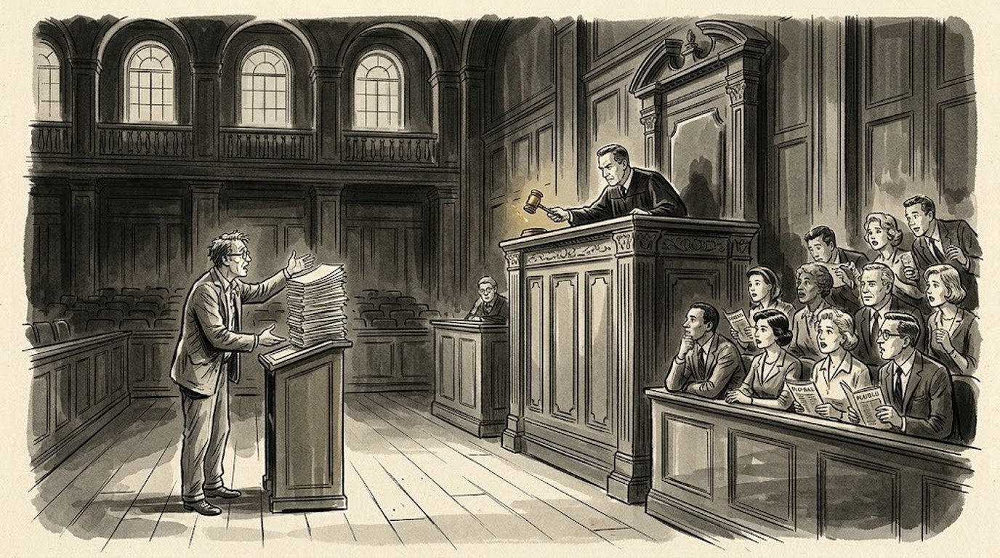

The Art of Dramatic Writing: what Lajos Egri gets right about premise, and where he’s overrated
Egri opens his book with premise because he thinks everything else is downstream of it. He’s mostly right, and the part he gets right is one of the best diagnostic tools a writer can have.


What a premise is, according to Egri
In The Art of Dramatic Writing, Lajos Egri argues that a premise is a complete sentence with three moving parts: a character trait, a conflict and an outcome. “Ambition,” “greed” and “poverty” are topics. “Ruthless ambition destroys itself” is a premise.
- Character or trait: the human drive or flaw at the center. Blind ambition, frugality, jealousy, ruthless greed.
- Conflict: the friction that trait creates in the world. It leads to, provokes, struggles against.
- Resolution: the inevitable moral or physical consequence of that clash. Destruction, solitude, self-ruin, triumph.
Read left to right, the sentence names who the protagonist is, what force they collide with, and where they land. Egri’s own examples: great love defies even death. Blind trust leads to ruin. Jealousy destroys itself and the thing it loves.
A premise is an assertion, not a topic
Writing “about” greed, revenge or forbidden love gets a writer nowhere, because a theme without a verdict has no dramatic momentum. A working premise takes a definite stand:
- Romeo and Juliet: great love defies even death.
- Macbeth: ruthless ambition leads to its own destruction.
- King Lear: blind trust leads to destruction.
- Ghosts: the sins of the fathers are visited upon the children.
Premises don’t have to be universal truths. You don’t need to prove a law of the universe, only what holds true in the universe of your story. Your conviction makes it true for the length of the script.
The premise contains the ending
This is the load-bearing idea in the chapter: if your premise says ambition destroys itself, Macbeth dies. Not because tragedy is nice, but because an ending that contradicts the premise means you failed to prove your own case.
Egri’s model is a courtroom. The writer has a conviction, the play is the evidence, and the last scene is the verdict. Anything else is a mistrial.
One premise per script. Two convictions competing for proof is the most common structural disease he diagnoses. If a second premise shows up in act two, one of them is a parasite, and you have to kill it.
The characters have to be capable of going all the way to the ending the premise demands. If you can’t prove it, the fault is the premise or the characters. Cast a man who would stop short of murder in a script that requires murder, and you’ve written yourself into a wall.
Ask a writer to state their premise in one sentence. If they can’t, you’ve found the problem.
A cutting tool, not a message
The audience never hears the premise. It exists so you can hold every scene up against it and ask whether the scene advances the proof. If it doesn’t, it’s out. This is the part working writers actually use and the part film students ignore.
You also have to believe it. Egri is blunt that a premise you don’t hold as a conviction produces dead writing, because you’ll flinch from pushing your characters to the wall.
And it can change. Many writers start with an image, a character or a vague situation rather than a polished premise. That’s fine. But before the script can hold together, you have to find the premise and then rewrite the earlier pages so every character and scene points toward the conclusion you’re proving. (That’s the same work a good outline does before you write a page.)
Where Egri is overrated
The reasoning is circular, and he never admits it. He picks plays that work, extracts a one-line moral from them, then announces the moral is why they work. Nobody can show that Shakespeare started from a sentence. You can reverse-engineer a premise out of any successful script, including scripts built entirely from a character or an image, so the method has no predictive power on its own.
The formula is also biased toward the morality play. “X leads to Y” is a machine for producing tragedy and 1930s social realism, which is exactly what Egri was steeped in. Run Chinatown through it and you get something like “good intentions are powerless against entrenched corruption,” which is true and also flattens the movie into a pamphlet. Ambiguous, ironic and open endings don’t break down cleanly, and Egri would call that a flaw in the work rather than a flaw in his tool.
Robert McKee’s “controlling idea” is the same idea with the moralism sanded off, and it’s the more usable version: a value plus its cause, stated as what your ending argues rather than what the universe decrees.
What’s worth keeping
Two things survive the critique, and they’re worth the chapter.
- The premise versus subject distinction. “My movie is about grief” isn’t actionable. “Refusing to grieve costs you the living” tells you what act three is.
- The diagnostic. Ask a writer to state their script’s premise in one sentence. If they can’t, or if the sentence doesn’t match the ending they wrote, you’ve found the problem in ninety seconds. That’s a better coverage tool than most of what gets taught.
Try it on your own script before anyone else reads it. Then check it against your logline and your act structure: all three should be telling the same story.
Frequently asked questions
What is a premise in The Art of Dramatic Writing?
Lajos Egri defines a premise as a one-sentence assertion with three parts: a character trait, the conflict it creates, and the outcome. For example, ruthless ambition leads to its own destruction.
What is the difference between a premise and a theme?
A theme is a topic, like greed or love. A premise takes a stand on it and implies an ending, which makes it something you can actually write toward.
Is The Art of Dramatic Writing still worth reading for screenwriters?
Yes, for the chapter on premise. The method is circular and biased toward tragedy, but the one-sentence premise test is one of the fastest ways to find what’s wrong with a draft.
How is Egri’s premise different from McKee’s controlling idea?
They are close cousins. McKee’s controlling idea states a value and its cause as what the ending argues, without Egri’s moralizing, which makes it easier to apply to ironic or open endings.